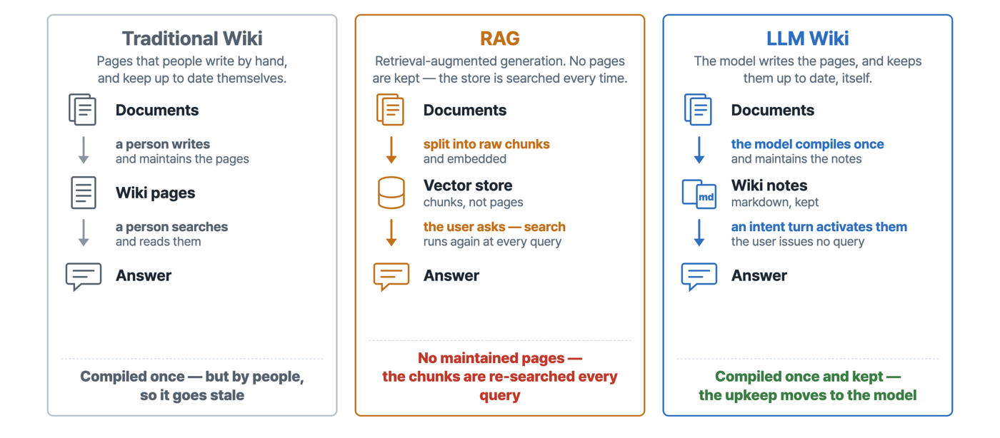
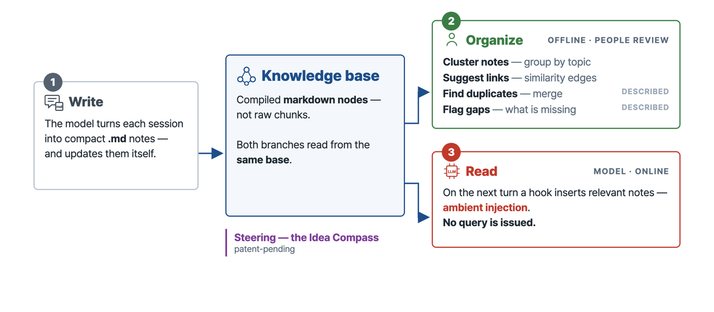
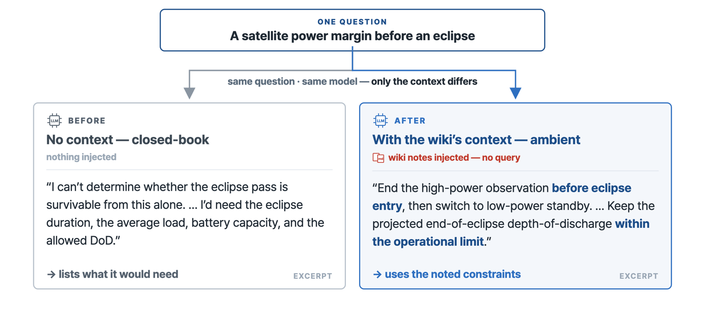
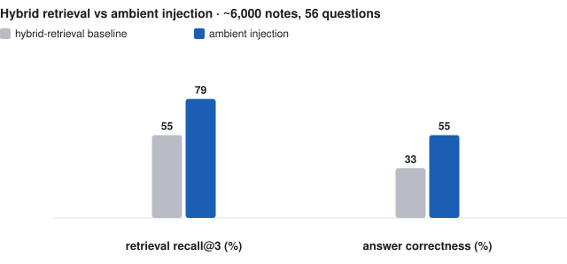

An LLM wiki system for high-consequence domains
LLM 이 운영 중 스스로 위키를 쓰고, 답하기 전에 다시 읽게 한 시스템입니다. 원내 서비스로 인계했습니다.
The model writes wiki nodes during operation and reads them back through ambient context injection: a hook selects relevant nodes before each generation without an explicit query. Built for space-operations and nuclear knowledge, where incorrect answers carry high cost; deployed on the institute's closed network and handed over as an internal service.
- 55% → 79% retrieval recall@3, hybrid baseline vs ambient injection (~6,000-note wiki, 56 questions)
- 33% → 55% answer correctness, same comparison
- 94% raw agreement between two blind graders from different model families
Idea
A traditional wiki is kept by people and goes stale; RAG keeps no pages and re-searches chunks at every query. In an LLM wiki the model compiles the notes once and keeps them up to date.

System
The model writes each session into compact markdown notes. One branch organizes them offline under human review; the other reads them online — on the next turn a hook inserts relevant notes without a query.

Demo
Results


How it was graded
Answers from one frontier model were graded blind by two frontier models from different families, with the retrieval condition hidden and a gold-span rubric. Ambient injection recovered the answer-bearing node more often than the hybrid-retrieval baseline, with the margin increasing as question wording diverged from the source text.
Direct injection of the correct node still left substantial hallucination.